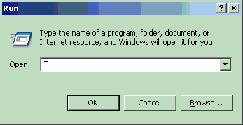
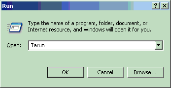
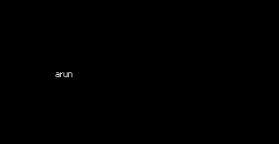

Function CompareImages(ByVal
SrcImage1 As Object, ByVal SrcImage2 As String, ByVal Destination As String, Optional ByVal ScaleImages As Boolean = True)
Description
Compares two images and creates the XOR of two images to show the
difference.
Arguments
SrcImage1, SrcImage2
File path of images to be compared
destination
The destination file name or special Destination Keyword
where the screen shot has to be stored. ScaleImages
Optional. Default Value: True. In case both the images are
of different size then the larger one is scaled down to the
size of smaller one and then compared. If set to False and
then images are of different sizes then the Function will
return a value of -1
Remarks
Consider the comparison of below two images
ScrImage1

SrcImage2

If destination parameter is used as a file name then it would generate a XOR of the two images
with black region showing the common part and non-black showing the differential part

If detsination parameter has a value [PixelDiffCount] then the function would return 52 in this
case and [PixelDiffPerc] would return 0.083% as the percentage of mismatch in the two images.
Example